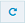

Configuring Email Templates
API Gateway provides a default email template to send email alerts. You can compose and save the subject line as well as the email content for reuse. You can also customize the template to suit your needs.

To configure Email Templates
1. Expand the menu options icon  , in the title bar, and select Administration.
, in the title bar, and select Administration. 2. Select Destinations.
3. Select Email > Templates to configure the event templates.
4. Specify the following for the Log Invocation, Monitor Service Level Agreement, Monitor Performance, and Traffic Optimization events:
 Subject
Subject: The subject line of the email to be sent.
Content: By default, the template appears. You can customize the email content.
The template consists of the following default information for the Log Invocation event:
Note:
The @ character is a place holder and the values are automatically generated by the system. For example, Status: @status appears as Status: SUCCESS in the email. You can use the existing parameters multiple times, delete the parameter if the parameter is not required from the available parameters, or use the corresponding optional parameters in the template. However, you cannot add new parameters.
The transaction event parameters from the API Gateway Metrics and
Event Notification engine are:
Runtime_Policy: @policy_action_name
API: @api_name
Version : @version
Operation or Resource_Name: @operation_resource_name
Native endpoint: @native_endpoint
Event generation time: @description
Consumer_Name: @consumer_name
Consumer_ID: @consumer_ID
Status: @status
Coorelation_ID:@correlationID
Error origin: @errorOrigin
The optional parameters that you can include in the template for the Log Invocation event are:
Native payload : @nativeResponsePayload
nativeRequestHeaders:@nativeRequestHeaders
nativeRequestPayload:@nativeRequestPayload
nativeResponseHeaders:@nativeResponseHeaders
nativeResponsePayload:@nativeResponsePayload
nativeHttpMethod:@nativeHttpMethod
nativeURL:@nativeURL
externalCalls:@externalCalls
sourceGatewayNode:@sourceGatewayNode
The template consists of the following default information for the Monitor Service Level Agreement, Monitor Performance and Traffic Optimization events:
Note:
You can use the existing parameters multiple times or delete the parameter if the parameter is not required from the available parameters in the template. However, you cannot add new parameters.
The monitor event parameters from the API Gateway Metrics and
Event Notification engine are:
Runtime_Policy: @policy_action_name
API: @api_name
Version : @version
Operation or Resource_Name: @operation_resource_name
Native endpoint: @native_endpoint
Action type: @actionType
Attribute: @attribute
Consumer_Name: @consumer_name
Consumer_ID: @consumer_ID
Alert Message: @alertMessage
Additionally, you can click  to abandon the changes and revert to the default template. You can click to review the changes before adding the changes to the email content.
5. Click Save.